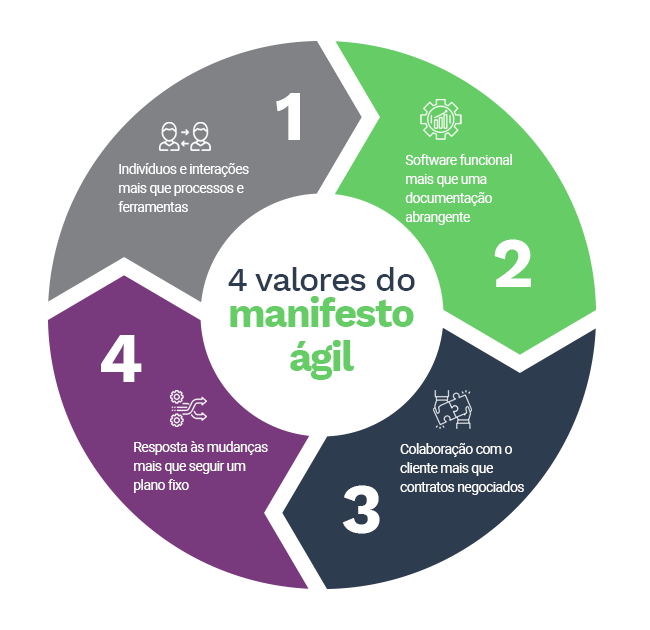
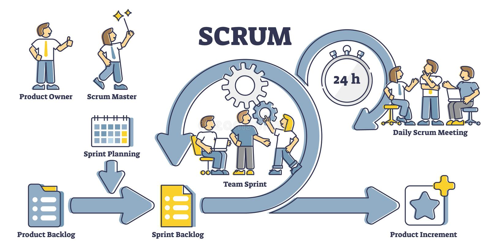
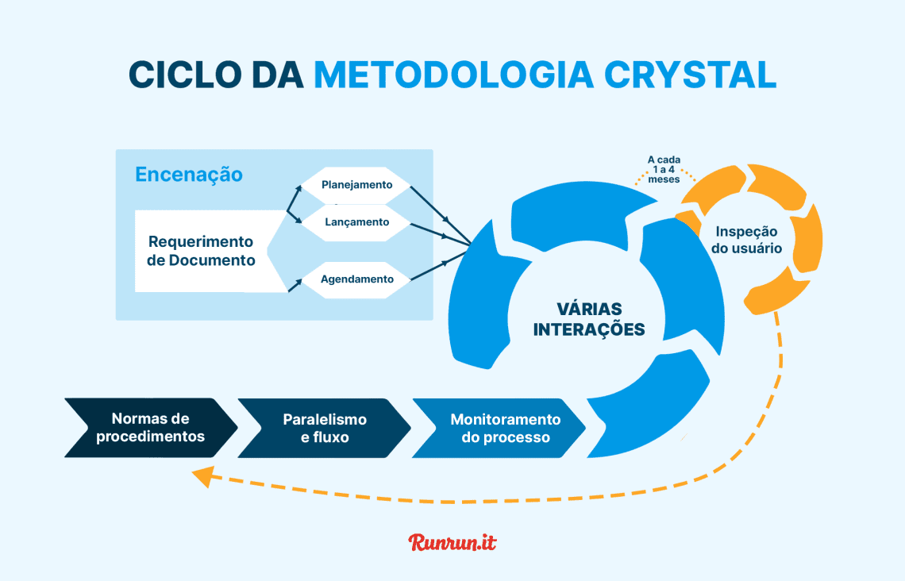
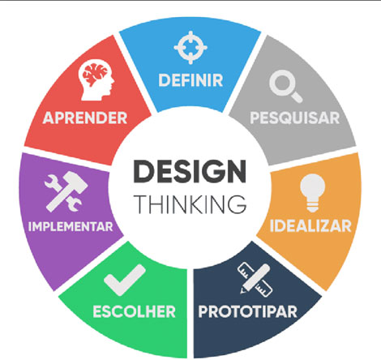

Definição De Manifesto Ágil
O Manifesto Ágil, criado em 2001, é um conjunto de valores e princípios que guiam o desenvolvimento de software de maneira mais flexível, colaborativa e eficiente. Ele enfatiza a entrega de valor contínuo ao cliente e a adaptação constante às mudanças. O manifesto é baseado em 4 valores principais e 12 princípios que visam melhorar o processo de desenvolvimento.
Em uma equipe que adota o Scrum, o valor de colaboração com o cliente é colocado em prática com reuniões frequentes de feedback, onde o cliente revisa incrementos de software entregues no final de cada sprint e pode ajustar os requisitos conforme necessário.
Valores dos Métodos Ágeis
Os métodos ágeis são baseados em valores fundamentais, que incluem:
- Adaptação rápida: Mudanças são bem-vindas e incorporadas continuamente.
- Entrega frequente: Lotes pequenos de funcionalidades são entregues regularmente.
- Colaboração constante: Equipes multidisciplinares trabalham juntas para maximizar o valor entregue.
- Simplicidade: O foco está no que é essencial para entregar valor ao cliente.
Princípios dos Métodos Ágeis
Os 12 princípios do Ágil incluem:
- Satisfazer o cliente por meio de entregas rápidas e contínuas.
- Aceitar mudanças, mesmo em estágios tardios.
- Entregar software funcional frequentemente.
- Trabalho colaborativo entre clientes e desenvolvedores.
- Motivar e dar suporte à equipe.
- Comunicação eficiente entre as partes envolvidas.
- Medir o progresso pelo software funcional.
- Manter um ritmo constante de desenvolvimento.
- Exigir excelência técnica e bom design.
- Simplicidade como chave para a produtividade.
- Autonomia das equipes para melhor tomada de decisão.
- Melhoria contínua com ajustes frequentes.
Principais Características dos Métodos Ágeis
- Iteratividade: Desenvolvimento baseado em ciclos curtos.
- Flexibilidade: Adapta-se às mudanças.
- Colaboração: Equipes autônomas e multidisciplinares.
- Feedback contínuo: Revisão periódica dos entregáveis.
- Foco na qualidade: Uso de testes automatizados e revisões constantes.
Comparativo: Modelos Tradicionais x Modelos Ágeis

| Aspecto | Tradicional | Ágil |
|---|---|---|
| Planejamento | Extensivo, feito no início do projeto | Contínuo e adaptável |
| Flexibilidade | Baixa | Alta |
| Entregas | Apenas ao final do projeto | Incrementais e frequentes |
| Feedback | Esporádico | Contínuo |
| Participação do Cliente | Limitada | Ativa |
Três Metodologias Ágeis:
Scrum:
O Scrum é uma metodologia ágil amplamente utilizada para gerenciar e executar projetos, especialmente no desenvolvimento de software. Ele se baseia em ciclos curtos de trabalho, chamados sprints, que geralmente duram de duas a quatro semanas. Durante o sprint, a equipe trabalha em um conjunto definido de tarefas ou funcionalidades, com o objetivo de entregar um incremento de valor ao final do ciclo.
Uma das principais características do Scrum são as reuniões diárias, conhecidas como daily stand-ups, onde os membros da equipe compartilham o que fizeram, o que planejam fazer e se há algum impedimento no processo.
Lean:

O Lean é uma metodologia que se inspira no Sistema de Produção Enxuta da Toyota e busca otimizar processos e reduzir desperdícios em todos os aspectos de um projeto ou operação. O objetivo principal do Lean é entregar valor máximo ao cliente com o mínimo de recursos e tempo possíveis.
Para alcançar isso, ele foca em identificar e eliminar atividades que não agregam valor ao produto ou serviço final, chamadas de desperdícios, como excesso de produção, esperas, defeitos e movimentos desnecessários.
Crystal:
O Crystal é um conjunto de metodologias ágeis que se caracteriza pela flexibilidade e adaptabilidade, permitindo que seja ajustado de acordo com o tamanho da equipe e a criticidade do projeto. Ao contrário de outras abordagens, o Crystal não adota um único conjunto de práticas, mas oferece diferentes "cores" ou variações, cada uma adequada a diferentes contextos.
Por exemplo, o Crystal Clear é recomendado para equipes pequenas e projetos de baixo risco, enquanto o Crystal Orange pode ser aplicado a projetos mais complexos e com maior escala.
Perfis Importantes no Scrum Team
Scrum Master
O Scrum Master facilita o processo ágil e garante que o time siga os princípios do Scrum. Atua como um coach, ajudando na adoção das práticas ágeis e promovendo a melhoria contínua. Ele facilita as cerimônias do Scrum (Daily, Planning, Review e Retrospectiva) e remove impedimentos que possam afetar a produtividade da equipe. Também protege o time de interferências externas e incentiva a auto-organização. Além disso, colabora com o Product Owner para manter um backlog bem refinado e ajuda a equipe a melhorar sua performance ao longo das sprints. Seu foco está na entrega eficiente e na criação de um ambiente produtivo e saudável.
Product Owner (PO)
O Product Owner é responsável por definir as prioridades do produto e maximizar seu valor para o negócio. Ele gerencia o Product Backlog, organizando as histórias de usuário e garantindo que o time esteja sempre focado no que gera maior impacto. Atua como a ponte entre os stakeholders e a equipe, esclarecendo dúvidas sobre os requisitos e garantindo alinhamento estratégico. Também participa ativamente das cerimônias do Scrum e aceita ou rejeita entregas com base nos critérios definidos. Seu papel exige visão de produto, capacidade de priorização e comunicação eficaz para garantir que o desenvolvimento esteja alinhado às expectativas do mercado e dos clientes.
Equipe de Desenvolvimento
A equipe de desenvolvimento é composta por profissionais multidisciplinares (desenvolvedores, designers, testadores, etc.) responsáveis por construir e entregar o produto. Trabalham de forma colaborativa e autônoma para transformar as histórias do backlog em incrementos funcionais. Durante as sprints, participam das cerimônias do Scrum, estimam tarefas, desenvolvem soluções e testam funcionalidades. São responsáveis por garantir a qualidade do código e do produto final, além de se adaptar a mudanças conforme necessário.
O que é e onde utilizar a ferramenta Design Thinking
O Design Thinking é uma abordagem criativa e centrada no usuário para resolver problemas complexos. Ele combina empatia, colaboração e experimentação para gerar soluções inovadoras. A metodologia segue etapas como imersão (entendimento profundo do problema), ideação (geração de ideias), prototipagem (criação de versões iniciais da solução) e testes (validação com usuários).
Onde Utilizar?
- Desenvolvimento de produtos e serviços: Criação de soluções alinhadas às reais necessidades dos usuários.
- Inovação empresarial: Aplicação de novas ideias para melhorar processos, produtos e modelos de negócios.
- Melhoria da experiência do usuário: Otimização da usabilidade e interação em produtos digitais e físicos.
- Resolução de desafios organizacionais: Melhorias internas, como cultura corporativa, eficiência e colaboração.